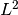

ObservablesLCWP¶
About the ObservablesLCWP class¶
The WaveBlocks Project
@author: R. Bourquin @copyright: Copyright (C) 2010, 2011, 2012, 2013, 2014 R. Bourquin @license: Modified BSD License
Inheritance diagram¶
Class documentation¶
- class WaveBlocksND.ObservablesLCWP(innerproduct=None)¶
This class implements observable computation for linear combinations
 of wavepackets
of wavepackets  . There are no assumptions made on the type of the wavepackets
in .
. There are no assumptions made on the type of the wavepackets
in .- __init__(innerproduct=None)¶
Initialize a new ObservablesLCWP instance for observable computation of linear combinations
of wavepackets .Parameters: innerproduct (A InnerProduct subclass instance.) – An inner product for computing the integrals. The inner product is used for the computation of brakets . Note
Make sure to use an inhomogeneous inner product here.
- kinetic_energy(lincomb, matrix=None, component=None, summed=False, return_matrix=False)¶
Compute the kinetic energy
 of a linear combination of wavepackets.
of a linear combination of wavepackets.Parameters: - linbomc – The linear combination of which we compute the kinetic energy.
- matrix (An ndarray or None (default).) – The kinetic overlap matrix. If None the matrix is computed internally.
- component (Integer or None.) – The index
 of the components
of the components  whose
kinetic energy we want to compute. If set to None the
computation is performed for all
whose
kinetic energy we want to compute. If set to None the
computation is performed for all  components.
components. - return_matrix (Boolean, default is False.) – Whether to return the kinetic overlap matrix used internally.
Returns: The kinetic energy of
and optionally the kinetic overlap matrix .- linbomc – The linear combination
- kinetic_overlap_matrix(lincomb, component=None)¶
Compute the kinetic overlap matrix .
Parameters: - lincomb – The linear combination .
- component (Integer or None.) – The index of the components whose
kinetic energy we want to compute. If set to None the
computation is performed for all components.
Returns: The matrix .
- lincomb – The linear combination
- norm(lincomb, matrix=None, component=None, summed=False, return_matrix=False)¶
Compute the  norm of a linear combination
of wavepackets.Parameters: - lincomb (A LinearCombinationOfWavepackets subclass instance.) – The linear combination of which we compute the norm.
- matrix (An ndarray or None (default).) – The overlap matrix. If None the matrix is computed internally.
- component – The index of the components whose norm
is calculated. The default value is None which means to compute
norms of all components.
- return_matrix (Boolean, default is False.) – Whether to return the overlap matrix used internally.
Returns: The norm of
and optionally the overlap matrix  .
.- lincomb (A LinearCombinationOfWavepackets subclass instance.) – The linear combination
- overlap_matrix(lincomb, component=None)¶
Compute the overlap matrix .
Note that this function is just a shortcut for calling the inner product evaluator directly.
Parameters: - lincomb – The linear combination .
- component (int or None.) – The index of the components whose overlap
is calculated. The default value is None which means to compute
overlaps of all components.
Returns: The matrix
.- lincomb – The linear combination
- potential_energy(lincomb, potential, matrix=None, component=None, summed=False, return_matrix=False)¶
Compute the potential energy . of a linear combination
of wavepackets.Parameters: - linbomc – The linear combination of which we compute the potential energy.
- potential – The potential
 . (Actually, not the potential object itself
but one of its V.evaluate_* methods.)
. (Actually, not the potential object itself
but one of its V.evaluate_* methods.) - matrix (An ndarray or None per default.) – The potential overlap matrix. If None the matrix is computed internally.
- component (Integer or None.) – The index of the components whose
potential energy we want to compute. If set to None the
computation is performed for all components.
- return_matrix (Boolean, default is False.) – Whether to return the potential overlap matrix used internally.
Returns: The potential energy of
and optionally the potential overlap matrix .- linbomc – The linear combination
- potential_overlap_matrix(lincomb, potential, component=None)¶
Compute the potential overlap matrix .
Parameters: - lincomb – The linear combination .
- potential – The potential . (Actually, not the potential object itself
but one of its V.evaluate_* methods.)
- component (Integer or None.) – The index of the components whose
potential energy we want to compute. If set to None the
computation is performed for all components.
Returns: The matrix .
- lincomb – The linear combination
- set_innerproduct(innerproduct)¶
Set the innerproduct.
Parameters: innerproduct (A InnerProduct subclass instance.) – An inner product for computing the integrals. The inner product is used for the computation of brakets . Note
Make sure to use an inhomogeneous inner product here.